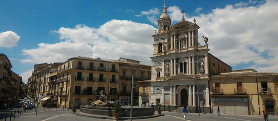
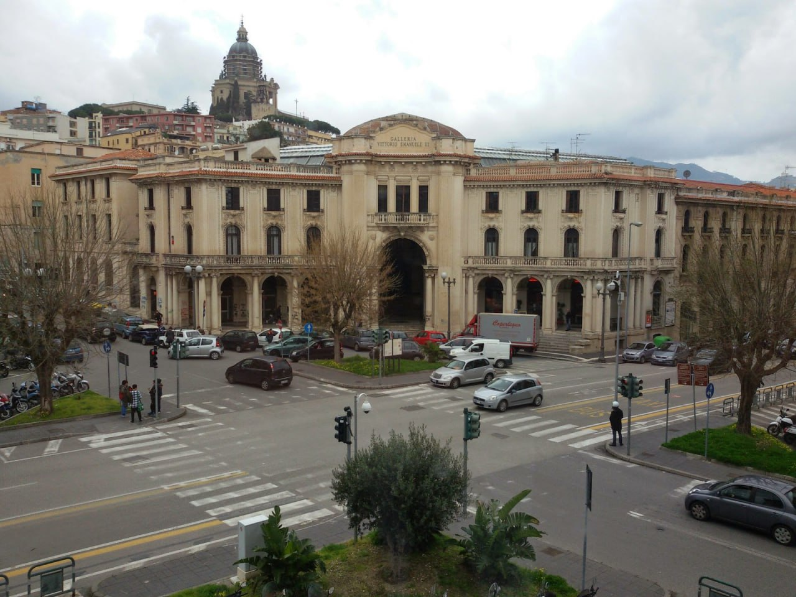

PALERMO: Piazza Castelnuovo

TRAPANI: Piazza Mercato del pesce

RAGUSA: Piazza Duomo

AGRIGENTO: Piazza Luigi Pirandello

CATANIA: Piazza Vincenzo Bellini
Un elegante palcoscenico a cielo aperto dominato dal fasto del Teatro Massimo, dove l'architettura tardo-barocca incontra la vivacità della vita notturna catanese.

SIRACUSA: Piazza Duomo
Un salotto di abbagliante pietra bianca stesa su un antico tempio greco; qui la luce di trasforma il barocco in un’esperienza mistica e senza tempo.

CALTANISSETTA: Piazza Giuseppe Garibaldi
Il cuore pulsante dell'entroterra, dove la Fontana del Tritone e la Cattedrale si guardano, raccontando la storia di una Sicilia mineraria e aristocratica.

MESSINA: Piazza Antonello
Un abbraccio architettonico a forma di esedra che rievoca l'eleganza classica, cerniera vitale tra la storia marittima dello Stretto e le istituzioni della città.

ENNA: Piazza Vittorio Emanuele II
Il belvedere del "Belvedere di Sicilia", uno spazio monumentale sospeso tra le nuvole che offre uno sguardo infinito sulle valli e sulle vette del cuore dell'Isola.